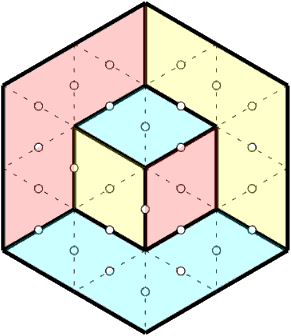

Draw the borders of domains that completely fill a hexagon, each domain being filled with diamonds (or
"calissons") of the same orientation (same color).
A calisson is formed by joining two equilateral triangles with a common side.
The domains are separated by edges drawn as solid lines; the positions of the edges to be
determined are drawn as dotted lines, with a small circle in the middle.
Two rules apply:
To make the tiling unique, some edges are fixed at the start:

Paving with calissons :

To win, all you have to do is draw the borders of the domains, with the help of the calissons coloring if necessary:

winning position
The hexagon's paving can be interpreted as the isometric projection of a stack of small cubic boxes in a large cubic room. The boxes are stacked by pushing them into the room as far as possible, the stacks increasing in height towards the back walls.
This vision of the game often means you don't need calissons to draw the solution!
On the computer, missing edges can be drawn by left-clicking on the center of the edge, while a calisson can be colored by right-clicking on the center of the diamond.
On a tablet/telephone/touch screen, touching the middle of an edge causes the edge to be drawn or the diamond to be colored, depending on the state of an interface button.
Notes on resolution:
Solution of a size 3 grid using the acute angle and fold rules, with all calissons drawn.
With practice, you can often do without calissons!
In this mode, there's no time limit on the game, and you can choose the size and level of the grids to be solved from a drop-down list.
For each grid solved, the score obtained is displayed, and a new grid is proposed.
In the event of a level change, the current grid is abandoned.
This mode lets you put your game skills to the test!
The aim is to achieve the highest possible total score in the shortest possible time, by solving grids of increasing size and difficulty similar to those on the training page (but with different grids!).
The limited screen size of a smartphone can make it difficult to play with large grids. To make it easier to
play under these conditions, you can set the maximum size of grids to be offered using the drop-down list below
the game launch buttons.
The score obtained for each grid increases with this maximum size, so that the duration of the game remains more
or less constant.
In both modes, two buttons can be used to change the flow of the game:
To return to the home screen from the game pages, click on the home button in the top left-hand corner

When playing on a computer, you can draw calissons (or diamonds) by right-clicking on the middle of an edge.
On touch-screen devices where right-clicking is not possible, the game pages display an indicator between the Reset and Abandon buttons, indicating whether pressing on the middle of an edge will draw an edge (Edge mode) or a rhombus (Diamond mode). Simply tap the indicator to change mode.
To obtain a high score, you must:
The score for each grid increases with its size and difficulty:
"Speedy Calisson" is inspired by the Calisson game invented by Olivier LONGUET. For a presentation, to learn more about solving techniques and to test yourself against the grids proposed by the author, please visit the original website (in French).
The game zone code has been modified from Arnaud DURAND's original code.
All content is licensed under a Creative Commons CC-BY-SA-NC license.
contact : martial.tarizzo (at) gmail . com